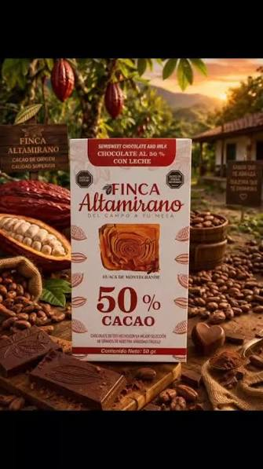

01

Finca cacaotera
Finca Altamirano
Inicio de la ruta del cacao: los equipos observan el cultivo y conversan con productores para registrar variedades, rendimiento y procesos de fermentación y secado.